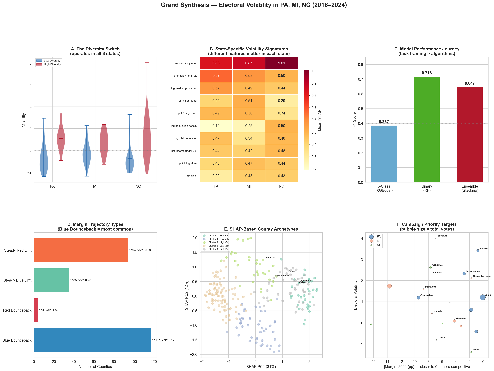
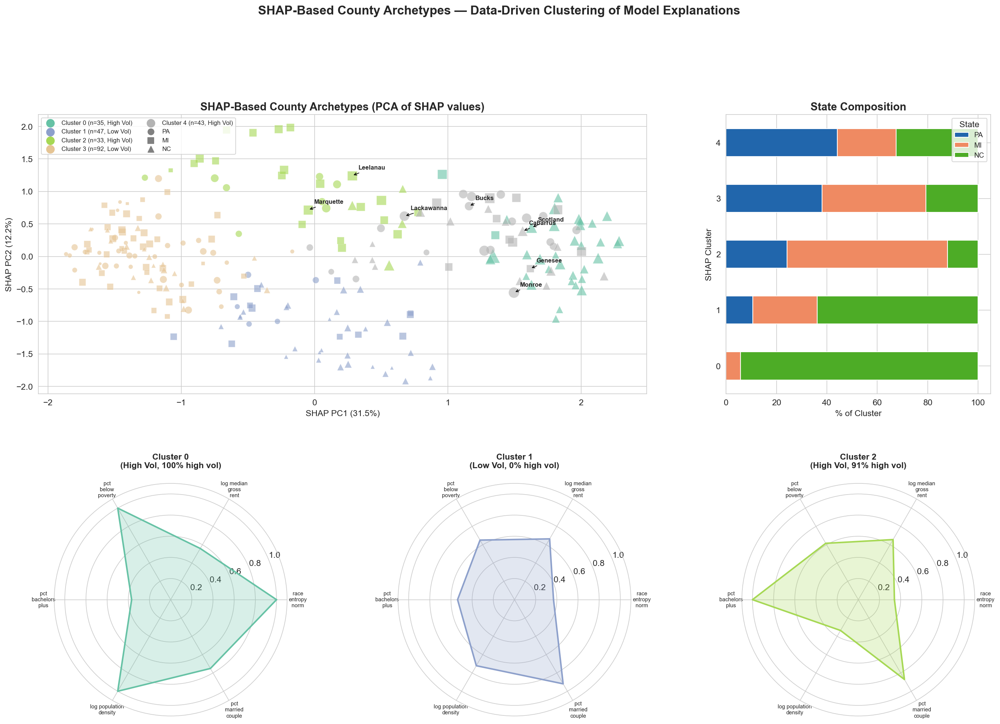
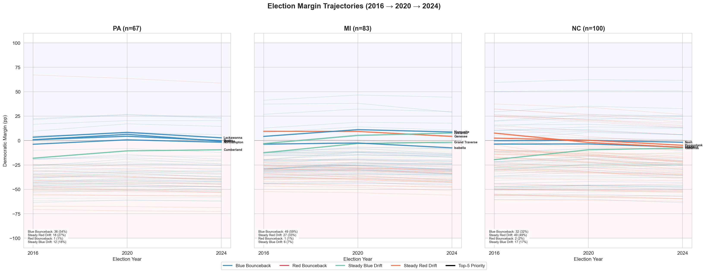

Campaign Strategy
The project replaces blanket battleground spending with a county-level targeting logic. Instead of asking which state matters, it asks where the next marginal dollar is most likely to move votes.
Milestone 4 · Final Deliverable
County persuasion opportunities are real, but they are state-specific. Our final PersuasionScore turns that insight into a county-by-county targeting guide for Pennsylvania, Michigan, and North Carolina.
The main takeaway is simple: campaigns should not treat battleground counties as interchangeable. A county profile that signals volatility in Pennsylvania does not necessarily behave the same way in Michigan or North Carolina, which is why pooled cross-state prediction breaks down so quickly.
Inside each state, though, a clear pattern emerges. Counties that are racially mixed, changing quickly, and often under economic stress are much more likely to move, which makes a state-specific persuasion ranking more useful than a single national template.
That is the role of the final PersuasionScore: it combines who looks persuadable, how much vote volume is at stake, and how likely the county is to behave like a swing county again.

The project replaces blanket battleground spending with a county-level targeting logic. Instead of asking which state matters, it asks where the next marginal dollar is most likely to move votes.
The results also help explain why some counties deserve far more attention than others. They give a more nuanced map of competitive geography than statewide polling or winner-take-all narratives alone.
The framework is already useful at county level, but it gets stronger with more states, better turnout data, voter-file enrichment, and repeated recalibration for future election cycles.
Click any item below to see how the different model families answered the project’s original research questions and hypotheses.
Our final answer is the PersuasionScore, not the earlier ranking variants. In the final scoring update, predicted volatility carries half the total weight, while the other half is split across within-state electoral weight and a transparent persuadability blend built from diversity, poverty, inverse income, and population density. The storytelling spotlight starts with Philadelphia County, Oakland County, and Halifax County, but the official rankings remain state-specific because the score is normalized within state.
Large urban persuasion/turnout hybrid target with meaningful predicted volatility.
High-volume suburban transition county with one of the strongest volatility signals in the state.
Smaller county, but the strongest volatility signal in the state pushes it to the top of the updated score.

Raw volatility highlights where margins moved the most, not necessarily where the next campaign dollar is most efficient. North Carolina dominates the extreme top of the volatility scale, while Pennsylvania and Michigan contribute fewer but still important high-swing counties. Once vote volume enters the picture, high-impact counties like Wayne, Philadelphia, Oakland, Chester, Montgomery, and Bucks matter much more than a raw-volatility list alone would suggest.
| County | Vol. |
|---|---|
| Monroe | 3.41 |
| Pike | 2.94 |
| Lackawanna | 2.32 |
| County | Vol. |
|---|---|
| Wayne | 2.39 |
| Leelanau | 2.26 |
| Grand Traverse | 2.10 |
| County | Vol. |
|---|---|
| Robeson | 8.03 |
| Anson | 4.46 |
| Scotland | 4.00 |
The cluster story is not random noise. The clearest unstable archetype is a poor, racially diverse rural profile concentrated in North Carolina, while affluent exurban and aging rural counties look substantially more stable. SHAP-based archetypes reinforce the same conclusion from a different angle: volatility comes from a small number of recognizable county types, not one universal statewide recipe.
NC-only concentration, about 21% poverty, small rural population, and the highest average volatility.
The largest and most educated cluster; volatility is not always extreme, but it stays meaningfully elevated.
High income, high homeownership, lower volatility, and fewer signs of rapid political movement.
Older, more homogeneous counties with the lowest average volatility and the most stable voting patterns.

This hypothesis is supported overall, but with clear state nuance. Lower-income and housing-pressure features repeatedly appear among top predictors, while poverty is especially decisive in North Carolina. The broader lesson is that economic stress matters, but the pathway differs by state: poverty dominates in North Carolina, rent pressure matters heavily in Pennsylvania, and Michigan is more education-driven.
| State | Best Regression R2 | What the model says |
|---|---|---|
| Pennsylvania | 0.674 | Rent, unemployment, and diversity matter most in the strongest state model. |
| Michigan | 0.331 | Education and transition features matter more than pure income measures. |
| North Carolina | 0.435 | Poverty is the clearest statewide volatility signal. |
Yes, and this is the strongest single result in the project. The normalized racial diversity measure
race_entropy_norm repeatedly outruns individual race-share variables in permutation
importance, SHAP analysis, threshold analysis, and interaction analysis. Crossing the 0.552 threshold
makes a county about 7.15 times more likely to be highly volatile, especially when diversity and poverty
appear together.

race_entropy_norm = 0.552, counties become far more likely to
land in the high-volatility bucket.
The temporal evidence points in that direction. Volatile counties usually move with broader statewide or national direction rather than inventing a completely separate path: Blue Bounceback is common, Steady Red Drift is the most volatile, and true red-to-blue bouncebacks are extremely rare. That makes these places look more like amplifiers of larger trends than isolated anomalies, although this remains an interpretation built from trajectory evidence rather than a standalone formal test.
| Trajectory type | Counties | % High volatility |
|---|---|---|
| Blue Bounceback | 117 | 34% |
| Steady Red Drift | 94 | 50% |
| Steady Blue Drift | 35 | 37% |
| Red Bounceback | 4 | 0% |
No. Leave-One-State-Out validation collapses to near-random performance, which means a model trained on two states struggles to predict the third. Pennsylvania behaves like a diversity-and-rent story, Michigan looks more like an education-and-transition story, and North Carolina is much more poverty-driven.

Diversity and housing pressure matter most.
Education and transition features dominate.
Poverty-driven volatility is the clearest pattern.
The swing map has some continuity, but it is not just the same counties repeating the same move. The most common pattern is Blue Bounceback, where counties swung toward Democrats in 2020 and snapped back in 2024. The most volatile pattern is Steady Red Drift, and North Carolina stands out because nearly half of its counties follow that path.

This question was not fully completed in the official milestone pipeline. We tracked vote volume and margin movement, but we did not finish a turnout-variance analysis that was strong enough to publish as a core finding. It remains an important next step, especially if the project expands to precinct-level data or voter files.
This is the final milestone-4 deliverable. The updated PersuasionScore uses three ingredients chosen for clarity and interpretability, with state-specific predicted volatility now carrying the most weight.
Linear blend of racial diversity, poverty, inverse income, and population density. This is the transparent answer to who looks movable.
A softened version of within-state vote share. This keeps large counties important without letting them completely dominate the score.
State-level out-of-fold Random Forest probability of high volatility. This is now the largest component, so repeatable swing behavior matters most in the final ranking.
Large urban persuasion/turnout hybrid target.
High-volume suburban transition county.
High-volatility rural persuasion test case.


| Rank | County | PersuasionScore | P(high volatility) | 2024 D margin | Why it matters |
|---|---|---|---|---|---|
| 1 | Philadelphia County | 0.838 | 0.744 | +58.8 pp | Large urban persuasion/turnout hybrid target |
| 2 | Allegheny County | 0.800 | 0.849 | +20.3 pp | High-volume defensive hold with swing risk |
| 3 | Delaware County | 0.736 | 0.867 | +23.7 pp | High-volume suburban transition county |
| 4 | Montgomery County | 0.690 | 0.750 | +22.8 pp | Affluent suburban transition county |
| 5 | Lehigh County | 0.633 | 0.748 | +2.7 pp | Bilingual outreach bellwether county |

| Rank | County | PersuasionScore | P(high volatility) | 2024 D margin | Why it matters |
|---|---|---|---|---|---|
| 1 | Oakland County | 0.797 | 0.880 | +10.6 pp | High-volume suburban transition county |
| 2 | Wayne County | 0.793 | 0.700 | +29.0 pp | Large urban persuasion/turnout hybrid target |
| 3 | Washtenaw County | 0.720 | 0.919 | +44.4 pp | Education-driven turnout anchor |
| 4 | Kent County | 0.712 | 0.857 | +5.4 pp | Suburban transition county |
| 5 | Ingham County | 0.654 | 0.795 | +29.7 pp | College-centered persuasion and mobilization target |

| Rank | County | PersuasionScore | P(high volatility) | 2024 D margin | Why it matters |
|---|---|---|---|---|---|
| 1 | Halifax County | 0.697 | 0.954 | +17.7 pp | High-volatility rural persuasion test case |
| 2 | Wake County | 0.689 | 0.610 | +25.4 pp | High-volume metro persuasion/turnout hybrid target |
| 3 | Lenoir County | 0.688 | 0.918 | -6.8 pp | Diverse rural warning signal |
| 4 | Washington County | 0.672 | 0.961 | +6.2 pp | Small-county volatility hotspot |
| 5 | Richmond County | 0.669 | 0.887 | -20.9 pp | Diverse rural warning signal |
The project shows that county-level persuasion opportunity is real, but only when we respect local context. The strongest counties for future Democratic attention are not the same in every swing state, and the best signals often come from diversity, economic stress, housing pressure, and state-specific political realignment rather than from a single national battleground formula.
race_entropy_norm = 0.552 is the clearest empirical finding in the project.